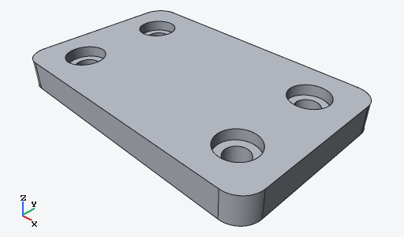

<!doctype html>
<meta charset="utf-8">
<title>ryucad 11.A: the start screen</title>
<link rel="stylesheet" href="vendor/phosphor.css">
<link rel="stylesheet" href="vendor/phosphor-fill.css">
<link rel="stylesheet" href="app.css">
<script src="glyphs.js"></script>
<script src="mock.js"></script>
<body>
<script>
  // No project open: recent projects with thumbnails (a missing one shows
  // the project's initial), Open, New project, Open sample, and the card
  // on driving ryucad from an agent.
  const card = (name, path, when, thumb) => `<div class="pcard"><div class="thumb">${thumb ? `` : name[0].toUpperCase()}</div>
    <div class="meta"><b>${name}</b><div class="mono weak" style="font-size:11px">${path}</div><div class="weak" style="font-size:12px">opened ${when}</div></div></div>`;
  mock(`<div class="window" style="grid-template-rows:24px 1fr 22px">${menubar()}
    <div class="start"><div>
      <h1>ryucad</h1><div class="weak">CAD an agent drives, and you watch, point, judge and nudge.</div>
      <div style="display:flex;gap:8px;margin-top:20px"><span class="btn primary">${icon("folder-open", 14)} Open…</span><span class="btn">${icon("folder-simple-plus", 14)} New project…</span><span class="btn">${icon("package", 14)} Open sample…</span></div>
      <div class="section" style="margin-top:28px">Recent projects</div>
      <div class="cards">${card("bracket-demo", "~/work/bracket-demo", "today, 14:02", true)}${card("gearbox", "~/work/gearbox", "yesterday", false)}${card("enclosure-v2", "~/clients/acme/enclosure-v2", "3 days ago", false)}</div>
    </div>
    <div class="card agentcard" style="align-self:start">
      <div class="head">${icon("terminal-window", 18, "accent")} Drive ryucad from an agent</div>
      <p>Agents model through ryucad's CLI; this window shows what they do as they do it. Give your agent these lines for <b>bracket-demo</b>:</p>
      <pre>cd ~/work/bracket-demo\nryucad rebuild\nryucad --help</pre>
      <div class="foot"><span class="btn">${icon("copy", 14)} Copy</span></div></div></div>
    <div class="status"><span>ryucad 0.6.0</span><span class="right"><span>${VARIANT.look} · ${VARIANT.theme}</span></span></div></div>`);
</script>
